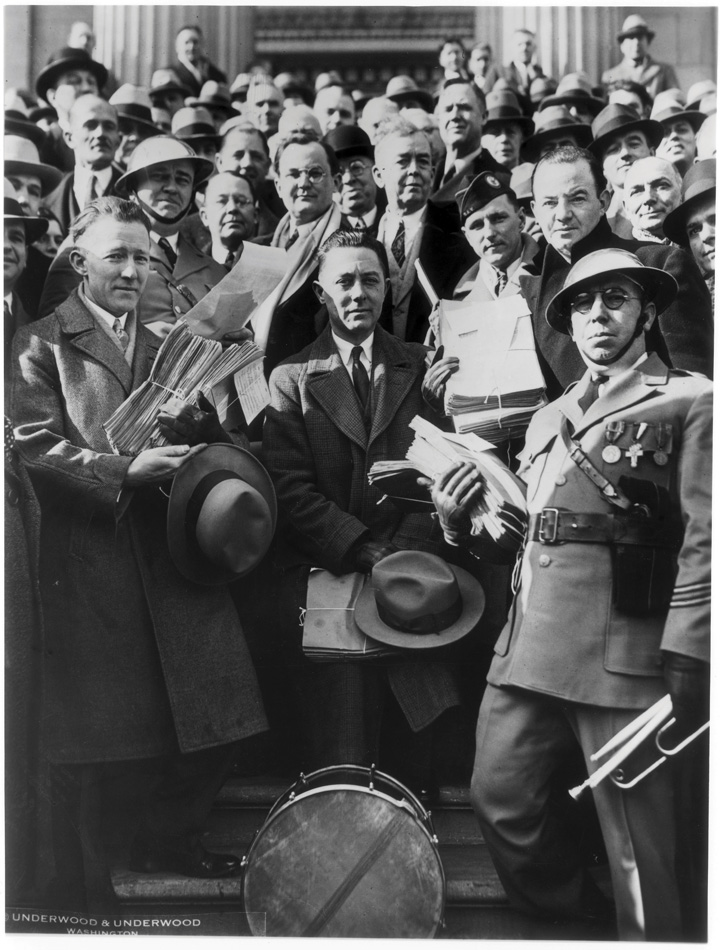

Figure 7.1
World War I veterans returned to the nation’s capitol as Roosevelt took office, seeking early payment of their enlistment bonus. Although neither President Hoover nor Roosevelt agreed to meet with the men, Eleanor Roosevelt and a number of congressmen did. In this photo, Texas congressman Wright Patman and Mississippi’s John Rankin collect petitions from members of the Bonus Army.
Franklin Delano Roosevelt (FDR) inherited a banking system on the verge of collapse and an economy where 12 million job-seekers could not find work. The stock market had declined by over 80 percent, while average household income was just above half of what it had been in the late 1920s. The scale of human suffering was particularly devastating for the 2 million families who lost homes and farms and the 30 million Americans who were members of households without a single employed family member. Perhaps most frustrating was that one in five children was chronically malnourished, while US farms continued to produce more food than the nation could possibly consume. Prices for some farm goods remained so low that millions of tons of food were wasted because it cost more to transport certain items than they would generate in revenue if sold. A similar tragedy existed in the form of warehouses that remained full of coats and other necessities, while millions of Americans lacked the ability to purchase them at nearly any price.
The nation wondered how their new president would fulfill his promise to relieve the suffering and get the nation back to work. Roosevelt had promised a “New Deal” but offered few details of how that deal would operate. In May 1933, a small group of veterans of the Bonus Army decided to return to Washington and see for themselves if the new president would be any more supportive of their request for an early payment of their WWI bonuses. He was not. In fact, three years later, Roosevelt would veto a bill providing early payment, a bill Congress eventually passed without his signature.
However, in 1933, Roosevelt’s treatment of the men and their families showed a degree of compassion and respect that demonstrated Roosevelt had at least learned from the public outrage regarding Hoover’s treatment of the Bonus Army. Rather than call out the army, Roosevelt provided tents and rations. Eleanor RooseveltA leading public figure who assisted her husband’s rise through New York and national politics, Roosevelt also transformed the position of presidential spouse. She traveled and advocated a number of liberal causes from women’s rights to civil rights. The president supported some of these causes, but feared his direct advocacy of controversial subjects such as civil rights would jeopardize his electoral support. Because of her popularity, Eleanor Roosevelt’s conferences were covered by every major news outlet and her decision to only admit female reporters to these conferences created many new opportunities for women in journalism. met with the men and promised that the administration would eventually find them jobs. She kept her promise, as World War I veterans were recruited for jobs in new government programs such as the Civilian Conservation Corps. Although this particular program was limited to those below the age of twenty-five, veterans were exempt from the age requirement. One of the veterans was said to have offered a simple comparison that reflected the difference between the two presidents. “Hoover sent the army,” the oft-quoted remark began, “Roosevelt sent his wife.” Those who know Eleanor Roosevelt understand that she likely met with the veterans on her own initiative. On this and many occasions, the president demonstrated his wisdom by at least partially deferring to the judgment of his most talented advisor.